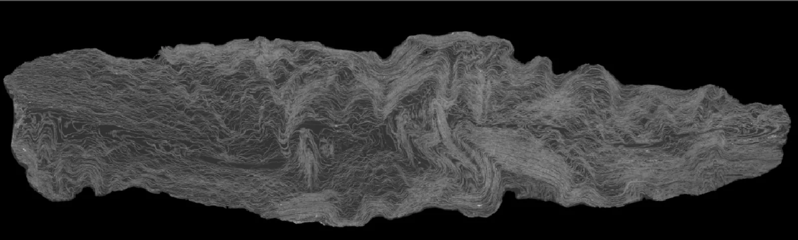
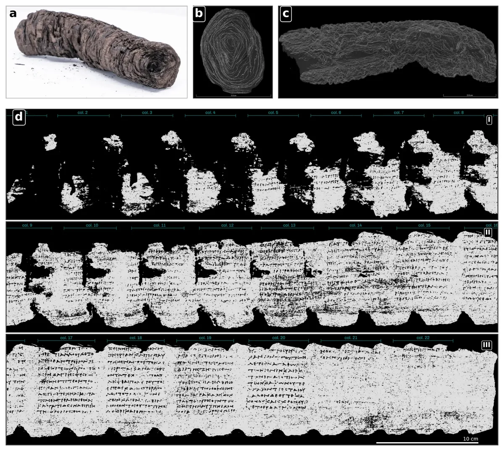

Vesuvius Challenge 2025
A 3D CT segmentation project that reconstructs the recto surface of carbonised papyrus scrolls — built on MONAI 3D U-Net models, a dual-head distance-field network, and an offline scoring lab tuned for the competition metric.

1. What this project does
Vesuvius is a research codebase for the Vesuvius Challenge 2025: a competition to read the inside of carbonised Herculaneum papyrus scrolls without opening them. Scrolls were scanned with high-resolution X-ray computed tomography, producing three-dimensional image volumes of tightly wound, crushed sheets of papyrus. The scientific prize is the text written on those sheets — but before any ink can be detected, the writing surface itself has to be located.

That is the job this repository does. Given a 3D CT sub-volume, the models here segment the recto surface of the papyrus: the sheet layer that faces the centre of the scroll (the umbilicus). Everything downstream — flattening the surface, detecting ink, reading letters — depends on this surface being traced accurately and, critically, as a single connected sheet.
2. The task in practice
The input is a 3D image volume. The target is a voxel-wise label map over a three-class scheme:
| Label | Meaning | Role in training |
|---|---|---|
0 | Background | Negative class. |
1 | Foreground — the recto surface | Positive class. The surface itself. |
2 | Unlabelled / ignore | Excluded from the loss and from scoring; padding uses this value. |
Three properties of this target shape the entire codebase, and are worth internalising before reading any of the architecture or modelling pages:
- The foreground is a surface, not a volume. The sheet is roughly two voxels thick but hundreds of voxels wide. In a 3D patch the positive class occupies well under one percent of voxels, and it forms a thin curved 2D manifold embedded in 3D space.
- Topology matters as much as overlap. A prediction that is 99 % correct voxel-wise but has a single spurious hole or a bridging connection between two sheets scores badly, because that error breaks the surface when it is later unrolled.
- Resolution is anisotropic in importance. Following a sheet along the scroll axis is easy; resolving two adjacent wraps of the scroll from each other is hard. The codebase therefore spends a great deal of effort on the cross-sheet directions.
3. How performance is measured
Competition performance is a single composite number, assembled from three complementary metrics. They are deliberately unalike: one measures geometric overlap, one measures whether the surface has the right shape, and one measures whether the labelled voxels are placed consistently with the ground truth.
| Component | Weight | What it captures |
|---|---|---|
| SurfaceDice | 0.35 |
Boundary overlap within a distance tolerance — forgiving of tiny thickness errors, strict about the surface being in the right place. |
| VoiScore | 0.35 |
Variation of information: how cleanly the predicted region separates from the background, penalising both stray positives and missing material. |
| TopoScore | 0.30 |
Betti-number matching — does the prediction have the right number of connected components, tunnels and cavities? This is the topological correctness term. |
Why TopoScore dominates the engineering SurfaceDice and VoiScore are largely solved by getting the segmentation approximately right. TopoScore is not: it is a discrete quantity, so a prediction can be visually excellent and still earn almost nothing if it accidentally closes a tunnel or splits a component. Nearly every modelling decision in this repository — the anisotropic backbone, the distance-field auxiliary head, the loss suite, and the post-processing lab — exists to push this one term up.
4. The two pipelines
The repository contains two complete, coexisting segmentation pipelines. They share the dataset contract and the scoring code, but differ in where the modelling intelligence lives: one in a custom architecture and loss design, the other with a mature automatic configuration framework.
Trainer with distributed
data-parallel execution and a loss-weight curriculum.
nnU-Net v2 pipeline
The nnU-Net v2 framework driving a residual-encoder 3D U-Net, configured from an explicit
plans file, with multi-GPU partitioned inference and a packaged Kaggle inference dataset.
Both pipelines converge on the same evaluation surface: probability volumes written to disk,
consumed by the scoring code in src/approach/unetbasic/metrics/kaggle_metrics.py and
by the offline post-processing lab under exploration/scoring/.
5. Repository at a glance
| Location | Contents |
|---|---|
src/approach/unetbasic/ |
Custom pipeline: dataset, model, training entry point, inference, metrics, losses. |
scripts/ |
nnU-Net baseline driver, experiment launcher and queue, synthetic data generators. |
configs/ |
Layered Hydra configuration shared by all approaches. |
exploration/scoring/ |
The offline scoring and post-processing lab. |
kaggle_datasets/inference/ |
Code packaged and published as a Kaggle dataset for submission-time inference. |
tests/ |
Unit tests for the dataset contract, augmentation config and loss implementations. |
docs/repo-overview/ |
This documentation portal. |